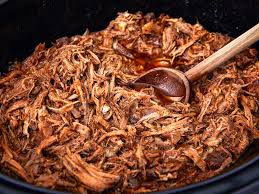

Pork Recipie
Back to Home

Description
BBQ pulled pork is my personal favorite BBQ to both make and eat. Mostly because it's one of the easiest types of meat to smoke.
With this recipie, you can make pulled pork that is so good, it will make you cry. You and all your fellow BBQ enjoyers will approve of your grillin' skills.
Ingredients
- 1 whole pork butt
- charcoal, wood, or pellet smoker
- BBQ seasoning of your choice
- an all purpose rub (salt, pepper, and garlic)
- optional bear claw meat shredders
Instructions
- Coat the pork butt with your all purpose rub.
- Add your BBQ rub.
- place on smoker at 225 degrees F.
- Let smoke for 1lb/hour or for 8 hours (whichever comes first).
- Bump temperature to 250 degrees.
- Cook untill instant read thermometer slides in without resistance.
- Pull and rest for 30-60 minutes, then shread with bear claws and serve.